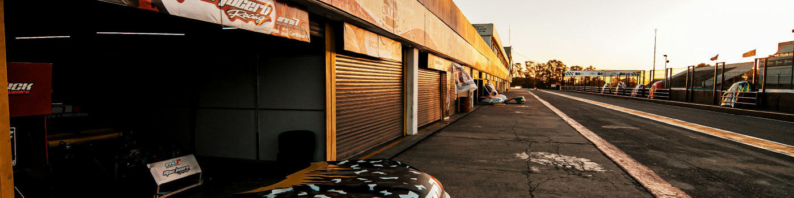
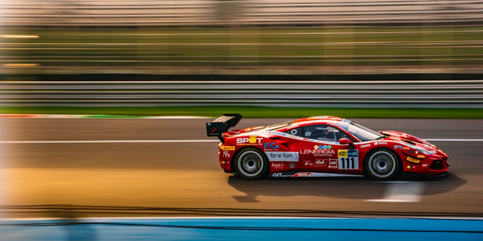
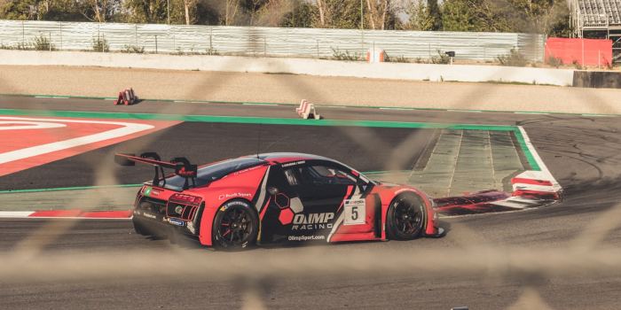
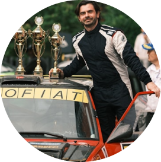
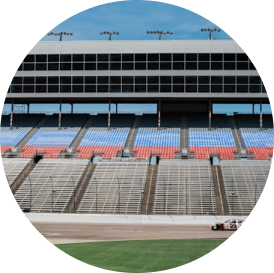

home > 스피디움 소개 > 회사소개
회사소개
“Ultimate Driving Playground”

우리가 꿈꾸는 모터 스포츠 테마파크, 국내 최초의 복합 자동차 문화 공간
인제스피디움은 드라이빙의 열정과 모터스포츠의 꿈을 실현하는 최상의 공간으로,
다양한 체험과 즐거움을 선사하며 새로운 자동차 문화를 열어갑니다.
-

국내 최초 복합 자동차 문화 공간
인제군 기린면에 위치한 인제스피디움은 국내 최초의 복합 자동차 문화 공간입니다. 레이싱 팬들에게 스피드 체험과 세계적 선수들을 만날 수 있는 기회를 제공하며, 다양한 레이싱 대회와 모터스포츠 체험시설로 온 가족이 즐길 수 있는 공간입니다.
-

세계적 수준의 레이싱을 즐기는 경기장
세계적인 서킷 디자이너 Alan Wilson이 설계한 인제스피디움은 국제자동차 연맹의 규격을 준수하여 시공된 명품 서킷입니다. 이제 이곳에서 다양한 국제 대회와 함께 국내 레이싱 문화의 발전을 직접 체험할 수 있습니다.
- 인제 스피디움의
디자인 컨셉은 Joyful Circuit -
Speed(속력, 속도) + Stadium(스타디움, 경기장)의 의미를 지닌 인제 스피디움은
자동차 레이싱 문화를 대중화 시키기 위해 자연이 아름다운 인제에서 탄생한 국내 최초의 오토테마파크 브랜드 입니다.
- 
- 